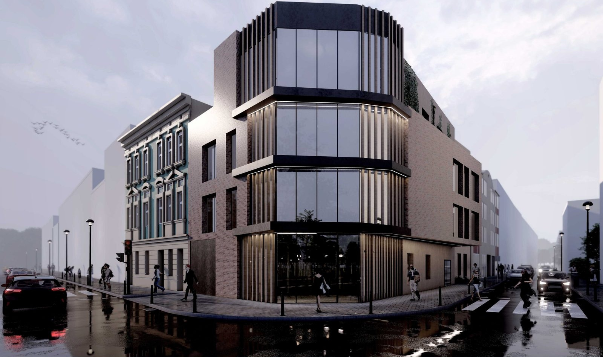

Tworzę przestrzenie, które łączą estetykę z funkcją — od koncepcji po detal wykonawczy.
I create spaces where aesthetics and function meet — from concept to construction detail.
Zobacz projekty View projectsJestem projektantką wnętrz i architektką z wykształceniem z Politechniki Krakowskiej, gdzie w 2024 roku obroniłam pracę magisterską z wyróżnieniem. Łączę solidne podstawy techniczne z wrażliwością na estetykę i potrzeby użytkownika.
I am an interior designer and architect educated at Cracow University of Technology, where I defended my master's thesis with distinction in 2024. I combine solid technical foundations with sensitivity to aesthetics and user needs.
Zawodowo specjalizuję się w projektowaniu wnętrz — od mieszkań i domów jednorodzinnych po przestrzenie usługowe i komercyjne. Doświadczenie zdobyte w pracowni Katarzyna Wnęk Innowacyjne Wnętrza pozwoliło mi rozwinąć umiejętności pracy z klientem, koordynacji projektu od koncepcji do realizacji oraz obsługi zaawansowanych narzędzi: Rhino 3D, V-Ray, SketchUp, Lumion.
Professionally I specialise in interior design — from apartments and single-family homes to service and commercial spaces. Experience gained at the studio Katarzyna Wnęk Innowacyjne Wnętrza allowed me to develop skills in client communication, project coordination from concept to delivery, and advanced tools: Rhino 3D, V-Ray, SketchUp, Lumion.
Poszukuję możliwości pracy w kreatywnym studiu projektowym, gdzie będę mogła rozwijać się zarówno artystycznie, jak i technicznie, biorąc udział w realizacji wymagających projektów wnętrzarskich.
I am looking for an opportunity in a creative design studio where I can grow both artistically and technically, contributing to demanding interior design projects.
Chętnie opowiem więcej o moich projektach i doświadczeniu podczas rozmowy rekrutacyjnej.
I'd be happy to tell you more about my projects and experience in a recruitment interview.
Napisz do mnie Send me an email